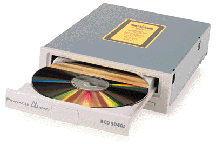
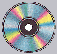

{kind=link}
{kind=link}


Radi na isti naèin kao i Compact disk player za reprodukciju muzike. Jedan CD-ROM može da primi oko 650MB podataka. Uglavnom se koristi za aplikacije koje je ranije bilo skoro nemoguæe distribuirati jer su zauzimale mnogo mesta na hard disk drajvu, npr. multimedija za koje je 100MB poèetna velièina. Na CD-ROMu izdaju se i sabrana dela velikih pisaca, enciklopedije i sl. Ujedno CD ureðaj na kompjuteru možete, preko audio kartice, ravnomerno povezati sa kuænim audio sistemom i slušati svoje muzièke kompakt diskove.

Compact Disk- Read Only Memory. Kompakt disk na kome su memorisani podaci samo za izèitavanje. Postoje diskovi koji se mogu jednom snimiti u CD pisaèu i oni nose oznaku CD-R. Na sebe mogu da prime 650MB podataka i vrlo su zgodni za pravljenje BackUp-a aplikacija i velikih kolièina podataka
Comact Disk Recordable - Koristi se za snimanje u kuanim CD pisaèima. Nastao je poèetkom 90-tih godina. Promovisali su ga Yamaha i SONY. Prazan košta 15-tak DeM a ukoliko želite da snimite pripremljeni softer, specijalizovani servisi naplaæuju gotov disk 15 DeM.
DVD je Digital Video Disk, novi standard koji može da primi 4.7GB podataka. Verzija sa dva sloja 8.4GB a obostrani, dvoslojni 16.8 GB. Usaglašavanje standarda je u toku.
Compact disk Rewritable